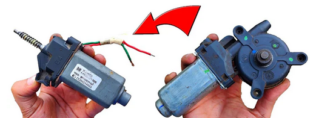

Um motor DC serve para converter energia elétrica de corrente contínua em energia mecânica para acionar diversos dispositivos, como brinquedos,
veículos elétricos, robôs, equipamentos médicos e máquinas industriais. Ele é valorizado por sua capacidade de controlar velocidade e torque de
forma precisa, oferecendo alta flexibilidade para aplicações que exigem variação de rotação e controle imediato do movimento.
Aqui para nossa aula vamos utilizar os motores de vidro elétrico de carro que é um motor de fácil acesso para contruirmos ferramentas para trabalho.
Para primeira ferramenta cortamos a frente do motor e tiramos a redução com a redução o motor tem apenas 70 RPM assim soldamos um mandril de furadeira
fica uma furadeira de 12v
na segunda tiramos a redução e soldamos um eixo roscado da mesma bitola do eixo do motor e com porcas travantes colocamos um disco lichadeira

Cerca de 15 watts de potência podendo ser controlado por uma bateria de carro ou uma fonte ATX de computador, para melhor utilização vamos usar a ATX
para uso basta ligar o unico fio verde da fonte com qualquer um preto GND, temos fios amarelos 12v, fios laranja 3.3v e fios vermelhos 5v
com isso podemos usar os fios amarelos que contém 12v de tensão e 15A de corrente, podendo ligar um objeto de até 180w
video em aula